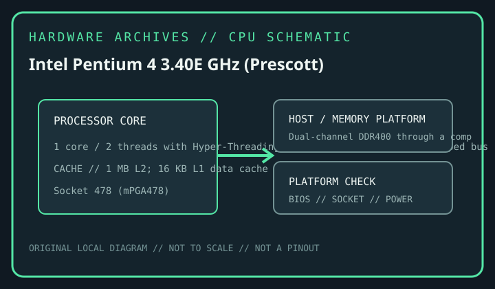

[ INTEL DESKTOP CPU // MODEL RECORD ]
Intel Pentium 4 3.40E GHz (Prescott)
Prescott Pentium 4, Q1 2004; 1 core / 2 threads with Hyper-Threading; 3.40 GHz; 800 MT/s quad-pumped bus; Socket 478 (mPGA478); 1 MB L2; 16 KB L1 data cache; 89 W thermal design power. Verify the complete package marking and motherboard support before installation.

MODEL IDENTIFICATION: Intel Pentium 4 3.40E GHz (Prescott). This record refers to this desktop SKU, not an entire processor generation; verify the physical marking, S-spec/ordering code and motherboard support list.
Verified model specifications
| Catalog path | Intel → Pentium generations |
|---|---|
| Model / launch era | Intel Pentium 4 3.40E GHz (Prescott); Prescott Pentium 4, Q1 2004 |
| Cores / threads / frequency | 1 core / 2 threads with Hyper-Threading; 3.40 GHz; 800 MT/s quad-pumped bus |
| Package / socket | Socket 478 (mPGA478) |
| Cache | 1 MB L2; 16 KB L1 data cache |
| TDP | 89 W thermal design power |
| Memory / bus | Dual-channel DDR400 through a compatible 800 MT/s-FSB chipset; memory type, timings and capacity are motherboard-dependent. |
| Platform compatibility | Requires a Socket 478 board explicitly validated for the Prescott 3.40E thermal and electrical load, 800 MT/s FSB, Hyper-Threading and a suitable BIOS. Prescott can exceed the thermal capability of earlier Northwood-era boards/coolers; check vendor CPU and cooler support before installation. |
Compatibility and service notes
- Requires a Socket 478 board explicitly validated for the Prescott 3.40E thermal and electrical load, 800 MT/s FSB, Hyper-Threading and a suitable BIOS. Prescott can exceed the thermal capability of earlier Northwood-era boards/coolers; check vendor CPU and cooler support before installation.
- Dual-channel DDR400 through a compatible 800 MT/s-FSB chipset; memory type, timings and capacity are motherboard-dependent.
- Prescott “E” 3.40 GHz Socket 478 SKU; distinguish it from Northwood 3.40C and LGA775 3.40F. Same clock does not mean same core, cache, package or power.
- Before fitting, confirm the exact motherboard manufacturer CPU list, revision, minimum BIOS, power delivery, cooling, package and memory type. Socket fit alone does not establish electrical or firmware compatibility; never force a processor.
Service & archival record
Record the complete processor marking and S-spec/ordering code, stepping, board model/revision, chipset, BIOS/microcode, memory configuration, cooler, power profile, physical condition and provenance. Separate measured behavior from published specifications.
Handle the package by its edges and protect contacts. Inspect for contamination, damaged pins/pads, socket damage and uneven cooler pressure before use.
Sources & further reading
- Intel ARK — exact-model lookup: Intel Pentium 4 3.40E GHz (Prescott)Intel’s official product-specification search. Legacy products may have limited or archived ARK data; cross-check the physical S-spec and Intel-era documentation.
- Intel Support — desktop processor installation and handlingManufacturer guidance for processor installation; motherboard firmware and platform support must also be confirmed with the board vendor.
- Bitsavers — archived Intel component documentationHistorical Intel processor datasheets and technical manuals for archived Pentium generations; use the appropriate generation document and verify revision-specific errata.
Published specifications are not a guarantee of system compatibility. Confirm the exact processor marking and board-vendor documentation.